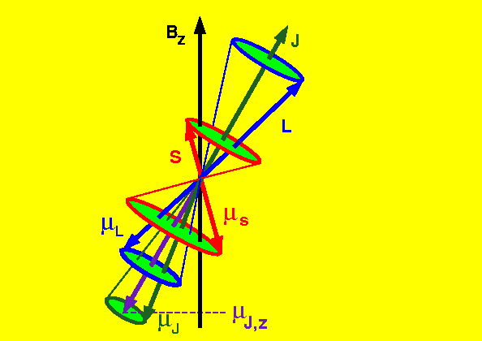
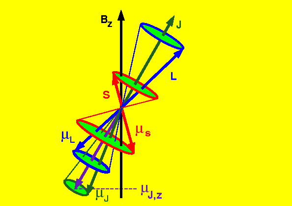
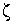

Signs for technical/specialized vocabulary
David Bar-Tzur
Links updated monthly with the help of LinkAlarm.
 

Zebra1; Zeeman effect.2
EXPLANATION OF THE GLOSSING SYSTEM
(to understand how I describe the signs in this dictionary).
For content knowledge of how to use the physics terms in context, see Guided tutorial in physics for interpreters.
For negotiating and developing temporary signs, see Preparation and sign negotiation
For vocabulary lists to determine helpful signs for a specific discipline, see Vocabulary lists by topic.
- Zakah - Concern for and almsgiving to the needy (الزكاة)
- (1) ONE-FORTIETH. (2) [V], PO > signer is dragged along forearm from elbow, then [O^], PO up, FO away, moves away while rolling fingers to end in an [A]. If this is confusing, use the previous option. For a film of this Saudi sign, click on Zakat. (< POOR-PEOPLE PAY-FOR)
- (4) Sawm - Self-purification through fasting (الصوم)
- [Bb] wipes FT across mouth. For a film of this Saudi sign, click on Fasting.
- Zambia
- (2h)[B^], POs > signer, crossed below wrists. To see the reference source for the sign(s) for this country or to look up other countries in the same geographical area, see Indigenous signs for countries. To find signs for cities within this country (some have no entries) see Indigenous signs for cities.
- Zawadi
- KWANZAA GIVE-GIFT, that is (2h)[1], FO up, DH behind NDH. The two hands separate while moving down and then rising up in an arc and opening to (2h)[3] + (2h)[X], POs ><, FOs away, nod forward once at wirsts as if bestowing a gift.
- z-axis
-
"Z"@index finger + [1] draws vertical line down index finger
3D-CL----------------------------------------------------------->
to include negative part of the axis.
-------------------------------------->
- zazen
- [loose C dot] is held in the palm of [loose C dot], close to body + SIT, where eyes are closed and the sign moves forward in a vertical circle and the movement is slowed down slightly then forcefully speeded up as it reaches the top of the loop. (< the sign for the city Lumbini, Nepal, where he was born and whose sign commemorates his birth plus the temporal aspect "over time" in ASL, to show extended sitting.)
- z-coordinate
- "Z" C-O-O-R-D.
- zeal, zealous
- ENTHUSIASTIC. For an animated gif of this sign, see Animated dictionary of religious signs - Deaf Missions: Zeal.
- Z/zealot
- ENTHUSIASTIC + AGENT. For an animated gif of the first sign, see Animated dictionary of religious signs - Deaf Missions: Zeal.
- zebra
- (2h)[4 or 5], POs > signer, run FTs across chest > their respective sides, move down chest and repeat. For a QuickTime movie of this sign, see ASL browser - zebra.
- Zechariah [Heb. Zechariah]
- Z-E-C-H.
- zechut
- WORTH PASS-DOWN.
- zechus Avos, zechut Avot, zechuth Avoth
- WORTH PASS-DOWN.
- Zen
- Z-E-N.
- zendo
- PLACE + SIT, where eyes are closed and the sign moves forward in a vertical circle and the movement is slowed down slightly then forcefully speeded up as it reaches the top of the loop. (< the temporal aspect "over time" in ASL, to show extended sitting.)
- zener (diode)
- Z.
- Zen master
- Z-E-N + (2h)[A], POs > opposite side, FOs away, DH is held below NDH and is then brought around until it is above it.
- Zephaniah [Heb. Tzefaniah]
- Z-E-P-H.
- zero
- find ~ of a function
-
_________________________t
FUNCTION EQUAL ZERO WHERE, FIND THAT.
- has a ~ at
- ______________rhq
EQUAL ZERO WHERE.
- ~ (a gauge/meter, v)
- MAKE ZERO.
- zero defects
- Z-D.
- zero effort channeling
- Z-E-N.
- zero insertion force
- Z-I-F.
- zeta, 
- Draw the shape of the letter in the air with the index finger.
- zigzag inline package
- Z-I-P.
- Zimbabwe
- [B], PO down, FO away from signer, pulls hand back so that the arm forms a "Z". To see the reference source for the sign(s) for this country or to look up other countries in the same geographical area, see Indigenous signs for countries. To find signs for cities within this country (some have no entries) see Indigenous signs for cities.
- zinc
- Z-N. For more information on this and other elements, see The elements. And for fun, see Elements by Tom Lehrer. To see this song with captions, go to The Elements song by Tom Lehrer.
- z-intercept
- "Z" + [1] intersects forefinger like CONFLICT
3D-CL--------------------------------------------->
- Zion
- ~ (Christian)
- HEAVEN.
- ~ (Jewish)
- TEMPLE MOUNTAIN.
- zip (disk)
- Z-I-P.
- zipper(s)
- [bX] zips up at location of zipper(s).
- zirconium
- Z-R. For more information on this and other elements, see The elements. And for fun, see Elements by Tom Lehrer. To see this song with captions, go to The Elements song by Tom Lehrer.
- zone
- ~ (basketball)
- (1) Z-O-N-E. (2) (2h)[V:], POs down, FOs away. Both hands move together > DS and then back.
- ~ (LDS [Mormon])
- Z-O-N-E.
- zone leader (LDS [Mormon])
- (1) Z-O-N-E LEADER. (2) Z-L.
- zoning
- Z-O-N-I-N-G.
- zoom-in
- (1) (2h)[C] are held like a lens aimed at the signer's face with hands touching and the DH zooms in close to the face. (2) [B], PO > face, FO up, rushes to face.
- zoom-out
- (1) (2h)[C] are held like a lens aimed at the signer's face with hands some distance apart and the DH zooms in close to the face. (2) [B], PO > face, FO up, rushes to face.
- z-score
- "Z" COUNT+.
- zygote
- Z-Y-G.
- Z-zero boson (Z0)
- "Z" + ZERO"superscripted".
Image credits
1. Patterns in nature.
2. From http://chem.ufl.edu/angerhof.html (Dr. Angerhofer's page), which is no longer extant.

Home